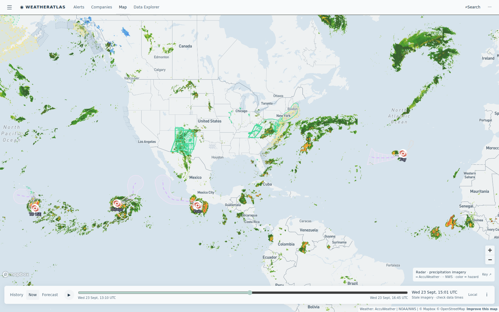

Daily severe-weather intelligence for LNG, refining, offshore, and terminal operators.

Live radar + alerts, 23 Sept ~14:30 UTC. The developing nor'easter shows as the organizing precipitation shield off the Mid-Atlantic coast; AccuWeather flash-flood flags remain active on Chesapeake and New Mexico sites. Tropical Depression Fay marked in the eastern Atlantic (no land threat); Hurricanes Polo and TD 15E remain over open East Pacific water. Interactive radar + hurricane tracker: accuweather.taborlin.co.
| System | Status | Energy-asset impact |
|---|---|---|
| Early-season nor'easter (East Coast) | DEVELOPING | Gale Warnings live Chesapeake → Massachusetts Bay; 70 mph gusts, coastal flooding and power-outage risk Thu–Sat. LNG berths, river refineries and product docks from the Delaware to Boston Harbor face multi-day marine stand-down risk |
| TD Fay (eastern Atlantic) | POST-TROPICAL | Weakening southwest of the Azores — no land threat; daily track checks continue at statistical season peak |
| Hurricane Polo (E Pacific, Cat 2) | CAT 2 | 104 mph tracking open Pacific south of Mexico — Mexican Pacific terminal ops watching only |
| TD 15E / TS Odalys (E Pacific) | CAT 2 / TS | Both over open East Pacific water — no landfall signal; shipping lanes west of Baja see elevated seas |
| Permian flash-flood flags (NM) — day 6 | ACTIVE | Sixth day of AccuWeather flash-flood threats + NWS Flood Watch on Delaware Basin producers (Lea/Eddy counties) — pad lightning stand-downs and haul-road washout risk continue |
| Bay of Bengal Deep Depression ONE | WATCH | 35 mph system near 17.8°N 84°E — monsoon-tail system; East Coast India refining/logistics interests monitor for intensification |
Same afternoon hours, same coordinates (Delaware River refinery docks, 39.82°N 75.41°W), two different planning answers on the nor'easter's leading rain shield:
Gale-adjacent from today: 34% AccuWeather rain-shield window this afternoon while free feeds smooth it to 22% — pre-storm cargo completion day ahead of Thu-Fri intensification.
View live brief →Gale Warning live on Massachusetts Bay: Boston-area LNG tanker arrivals are wind-gate operations — today is the last full-rate cargo day before the weekend blow.
View live brief →